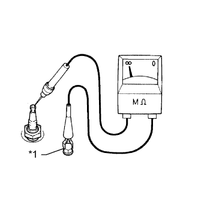
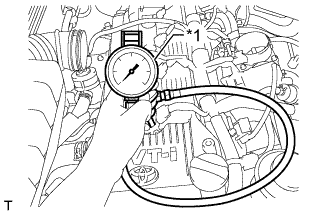

ДВИГАТЕЛЬ > ПРОВЕРКА БЕЗ СНЯТИЯ С АВТОМОБИЛЯ |
| 1. ПРОВЕРЬТЕ ОХЛАЖДАЮЩУЮ ЖИДКОСТЬ ДВИГАТЕЛЯ |
Когда двигатель находится в холодном состоянии, уровень охлаждающей жидкости должен быть между отметками "LOW" и "FULL".
Если уровень охлаждающей жидкости двигателя ниже отметки "LOW", проверьте, нет ли утечек, и долейте до отметки "FULL" охлаждающую жидкость с увеличенным сроком замены "Super Long Life Coolant (SLLC)" от компании Тойота или аналогичную высококачественную охлаждающую жидкость на основе этиленгликоля (а не на силикатной, аминовой, нитритной или борнокислой основе), изготовленную по гибридной технологии органических кислот.
| 2. ПРОВЕРЬТЕ МОТОРНОЕ МАСЛО |
Прогрейте двигатель, затем остановите его и подождите 5 минут.
Убедитесь, что уровень масла находится между отметками низкого и максимального уровней на щупе проверки уровня масла.
Если уровень масла находится на низком уровне, убедитесь в отсутствии утечек моторного масла и долейте масло до максимальной отметки.
| 3. ПРОВЕРЬТЕ АККУМУЛЯТОРНУЮ БАТАРЕЮ |
Убедитесь, что аккумуляторная батарея не повреждена и не деформирована. В случае наличия серьезных повреждений, деформации или утечки воды замените аккумуляторную батарею.
Проверьте количество электролита в каждом элементе батареи.
Для необслуживаемых аккумуляторных батарей:
Для обслуживаемых аккумуляторных батарей:
Выключите зажигание и включите фары на 20–30 с. Эта операция обеспечивает снятие поверхностного заряда с аккумуляторной батареи.
Измерьте напряжение между отрицательным (-) и положительным (+) выводами аккумуляторной батареи.
| 4. ПРОВЕРЬТЕ ФИЛЬТРУЮЩИЙ ЭЛЕМЕНТ ВОЗДУШНОГО ФИЛЬТРА В СБОРЕ |
Снимите крышку воздушного фильтра.
Снимите фильтрующий элемент воздушного фильтра.
Осмотрите фильтр и проверьте, нет ли на нем чрезмерных повреждений и следов масла.
Если необходимо, замените фильтрующий элемент воздушного фильтра.
| 5. ПРОВЕРЬТЕ СВЕЧУ ЗАЖИГАНИЯ |
Проверьте электрод.
|  |
С помощью мегомметра измерьте сопротивление изоляции.
| Подключение диагностического прибора | Условие | Заданные условия |
| Свеча зажигания (контакт) - масса | Всегда | 10 МОм или более |
| *1 | Масса |
Альтернативный метод проверки:
Быстро разгоните двигатель до 4000 об/мин 5 раз.
Снимите свечу зажигания.
Осмотрите свечу зажигания.
Если электрод сухой, свеча зажигания работает должным образом. Если электрод влажный, перейдите к следующему шагу.
Убедитесь в отсутствии повреждений резьбы и изолятора свечи зажигания.
При наличии повреждений замените свечу зажигания. При отсутствии повреждений установите свечу зажигания на место.
| Изготовитель | Тип свечи зажигания |
| DENSO | SK20HR11 |
| NGK | ILFR6C11 |
Проверьте межэлектродный зазор свечи зажигания.
 |
Очистите свечи зажигания.
При наличии на электроде следов влажного нагара очистите электрод с помощью прибора для очистки свечей зажигания, а затем высушите его.
| 6. ПРОВЕРЬТЕ ПОЛИКЛИНОВОЙ РЕМЕНЬ ВЕНТИЛЯТОРА И ГЕНЕРАТОРА |
 |
Убедитесь в отсутствии износа, трещин и других признаков повреждения.
При обнаружении следующих дефектов замените вентилятор и поликлиновой ремень генератора.
 |
Убедитесь в том, что приводной ремень правильно располагается в углублениях шкива.
| *a | ПРАВИЛЬНО |
| *b | НЕПРАВИЛЬНО |
 |
Убедитесь, что индикаторная метка натяжителя находится в диапазоне A, как показано на рисунке.
| *1 | Метка со стороны кронштейна |
| *2 | Метка со стороны рычага |
| *3 | Поликлиновой ремень вентилятора и генератора |
| *4 | Натяжитель |
| 7. ПРОВЕРЬТЕ ЗВУК РАБОТЫ МЕХАНИЗМА РЕГУЛИРОВКИ ЗАЗОРА В ПРИВОДЕ КЛАПАНОВ |
Несколько раз повысьте частоту вращения коленчатого вала двигателя. Убедитесь, что двигатель не издает необычных шумов.
Если возникают необычные шумы, дайте двигателю прогреться и поработать на холостом ходу более 30 минут. Затем снова выполните описанную выше проверку.
При обнаружении во время такой проверки неисправностей или неполадок выполните проверку механизма регулировки зазора в приводе клапанов (Нажмите здесь).
| 8. ПРОВЕРЬТЕ УГОЛ ОПЕРЕЖЕНИЯ ЗАЖИГАНИЯ |
Прогрейте и выключите двигатель.
Если используется портативный диагностический прибор:
Подсоедините портативный диагностический прибор к DLC3.
Запустите двигатель и оставьте его работать на холостом ходу.
Включите портативный диагностический прибор.
Войдите в следующие меню: Powertrain / Engine and ECT / Data List / IGN Advance.
Убедитесь в том, что угол опережения зажигания возрастает сразу после увеличения частоты вращения коленчатого вала двигателя.
Войдите в следующие меню: Powertrain / Engine and ECT / Active Test / Connect the TC and TE1.
Определите значение IGN Advance.
Выполните диагностику в режиме Active Test.
Если портативный диагностический прибор не используется:
Ослабьте хомут шланга со стороны корпуса дроссельной заслонки.
Выверните 3 болта и отсоедините соединитель впуска воздуха.
 |
Подсоедините щуп стробоскопа к проводу разъема катушки зажигания, идущему к цилиндру № 1.
Подсоедините соединитель впуска воздуха.
Запустите двигатель и оставьте его работать на холостом ходу.
 |
С помощью SST соедините контакты 13 (TC) и 4 (CG) на DLC3.
| *a | Вид спереди разъема DLC3 |
С помощью стробоскопа проверьте угол опережения зажигания.
Отсоедините SST от DLC3.
Проверьте установку угла опережения зажигания.
Убедитесь в том, что угол опережения зажигания возрастает сразу после увеличения частоты вращения коленчатого вала двигателя.
Выключите зажигание.
Отсоедините стробоскоп от двигателя.
Подсоедините соединитель впуска воздуха с помощью 3 болтов.
Затяните хомут шланга.
| 9. ПРОВЕРЬТЕ ЧАСТОТУ ВРАЩЕНИЯ КОЛЕНЧАТОГО ВАЛА ДВИГАТЕЛЯ НА ХОЛОСТОМ ХОДУ |
Прогрейте и выключите двигатель.
Если используется портативный диагностический прибор:
Подсоедините портативный диагностический прибор к DLC3.
Запустите двигатель и оставьте его работать на холостом ходу.
Включите портативный диагностический прибор.
Войдите в следующие меню: Powertrain / Engine and ECT / Data List / Engine Speed.
Выключите зажигание.
Отсоедините портативный диагностический прибор от DLC3.
 |
Если портативный диагностический прибор не используется:
| *a | Вид спереди разъема DLC3 |
С помощью SST подключите щуп тахометра к контакту 9 (TAC) на DLC3.
Проверьте частоту вращения на холостом ходу.
Отсоедините щуп тахометра от DLC3.
Если частота вращения коленчатого вала не соответствует заданной, обновите значение параметра настройки регулировки частоты вращения холостого хода (ISC) с помощью описанной ниже процедуры 1 или 2, а затем снова проверьте частоту вращения коленчатого вала.
Процедура 1:
После полного прогрева двигателя двигайтесь на автомобиле со скоростью 30 км/час (19 миль в час) в течение 30 с или более и дайте поработать двигателю на холостом ходу в течение не менее 30 с. Повторите эту процедуру не менее 5 раз.

| *a | Двигатель полностью прогрет | *b | Скорость автомобиля - 30 км/час (19 миль в час) |
| *c | Холостой ход | *d | 1 раз |
Процедура 2:
После полного прогрева остановите двигатель, а затем включите его на холостом ходу. Повторите эту процедуру не менее 5 раз.

| *a | Двигатель полностью прогрет | *b | Двигатель остановлен |
| *c | Двигатель запущен | *d | Холостой ход |
| *e | 1 раз | - | - |
| 10. ПРОВЕРЬТЕ СИСТЕМУ РЕГУЛИРОВКИ ЧАСТОТЫ ВРАЩЕНИЯ ХОЛОСТОГО ХОДА |
Прогрейте и выключите двигатель.
Проверьте систему регулировки частоты вращения холостого хода.
|
С помощью SST соедините контакты 13 (TC) и 4 (CG) на DLC3.
| *a | Вид спереди разъема DLC3 |
Запустите двигатель на холостом ходу.
После соединения контактов TC и CG убедитесь, что частота вращения коленчатого вала изменяется приблизительно до 1000-1500 об/мин на 5 с, а затем возвращается к уровню холостого хода.
Если результат не соответствует требованиям, проверьте корпус дроссельной заслонки (Нажмите здесь), DTC (Нажмите здесь) и жгут проводов.
| 11. ПРОВЕРЬТЕ КОМПРЕССИЮ |
Прогрейте и выключите двигатель.
Проверьте коды DTC (Нажмите здесь).
Выверните 4 болта и снимите 4 катушки зажигания.
Снимите 4 свечи зажигания.
Отсоедините 4 разъема топливных форсунок.
|  |
Проверьте давление компрессии в цилиндре.
Установите в отверстие для свечи зажигания датчик компрессии.
| *1 | Датчик компрессии в цилиндрах |
Полностью откройте дроссельную заслонку.
С помощью стартера прокрутите двигатель и измерьте давление компрессии.
Подсоедините 4 разъема топливных форсунок.
Установите 4 свечи зажигания.
Установите 4 катушки зажигания и закрепите их 4 болтами.
Сбросьте коды DTC (Нажмите здесь).
| 12. ПРОВЕРЬТЕ СОДЕРЖАНИЕ CO/CH |
Запустите двигатель.
Запустите двигатель на оборотах 2500 об/мин и дайте ему поработать, по крайней мере, в течение 180 секунд.
Вставьте пробник датчика измерения содержания CO/CH не менее, чем на 40 см (1,31 фута) в выхлопную трубу при работе двигателя на холостом ходу.
Проверьте концентрацию CO/CH при работе двигателя на холостых оборотах и при частоте вращения коленчатого вала двигателя 2500 об/мин.
Проверьте работу датчика состава топливовоздушной смеси (Нажмите здесь) и подогреваемого кислородного датчика (Нажмите здесь).
В таблице ниже перечислены возможные неисправности. Выполните проверку и при необходимости устраните причины неисправности.
| CO | CH | Неисправности | Возможные причины |
| Нормальная | Высокая | Неравномерный холостой ход |
|
| Низкая | Высокая | Неравномерный холостой ход (Колебания значения СH) |
|
| Высокая | Высокая | Неравномерный холостой ход (из выпускной трубы идет черный дым) |
|